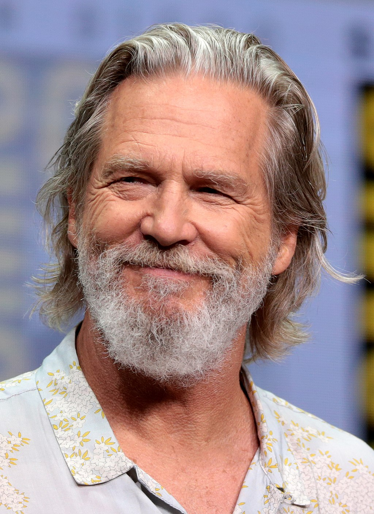

Jeffrey Leon Bridges (born December 4, 1949) is an American actor, singer, and producer. He comes from a prominent acting family and appeared on the television series Sea Hunt (1958–1960), with his father, Lloyd Bridges and brother, Beau Bridges.